System Responses
System Modeling and Control · Chapter 8
Contents
First-Order Responses and Motor Identification
Second-Order Transient Response and Closed-Loop Poles
Peak Time, Overshoot, Settling Time, and Rise Time
Gain Selection and Motor-Parameter Identification
Effects of Zeros and Higher-Order Poles
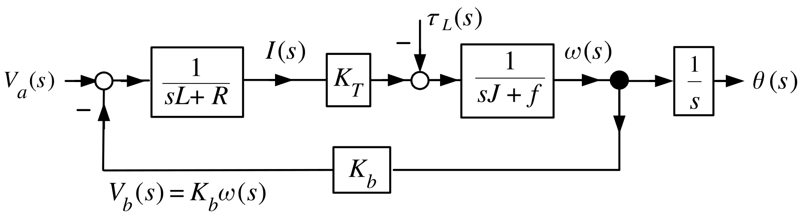
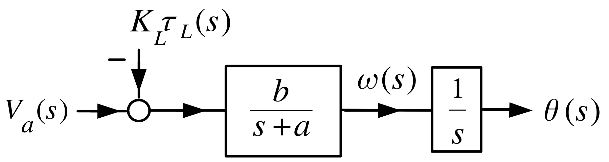
\(T_{m}\triangleq1/a,K_{m}\triangleq b/a.\)
Compute \(\omega(t)\) due to a step input voltage.
\(\omega(s)=\dfrac{K_{m}}{T_{m}s+1}V_{a}(s)-\dfrac{K_{m}}{T_{m}s+1}K_{L}\tau_{L}(s).\)
Let \(\tau_{L}=0\) and set
\[ G(s)=\frac{K_{m}}{T_{m}s+1}. \]
A common form for a first-order \(G(s).\)
- Normally the leading coefficient in \(s\) of the denominator is \(1\)!
Step input voltage \(V_{a}(s)=\dfrac{V_{0}}{s}\):
\[ \omega(s)=\frac{K_{m}}{T_{m}s+1}\frac{V_{0}}{s}=V_{0}K_{m}\!\left( \frac {1}{s}-\frac{1}{s+1/T_{m}}\right) \]
and inverse LT
\[ \omega(t)=V_{0}K_{m}(1-e^{-t/T_{m}})u_{s}(t). \]
\[ \begin{array}{c|l} \hline t & \frac{\omega(t)}{V_{0}K_{m}}=1-e^{-t/T_{m}}\\\hline 0 & 1-e^{-0}=0\\\hline T_{m} & 1-e^{-1}=0.632\\\hline 2T_{m} & 1-e^{-2}=0.86\\\hline 3T_{m} & 1-e^{-3}=0.95\\\hline 4T_{m} & 1-e^{-4}=0.98\\\hline \end{array} \]
Plot \(\omega(t)=V_{0}K_{m}(1-e^{-t/T_{m}})u_{s}(t).\)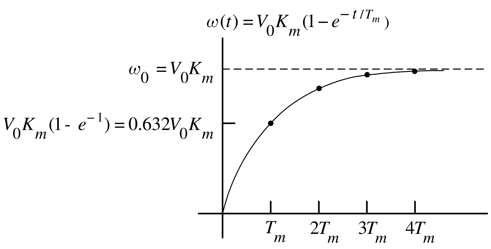
\(T_{m}\) is the time constant and its units are in seconds.
The smaller the value of \(T_{m}\) the faster the system responds.
Example Let \(\omega_{0}\) be the desired final angular speed. Set \(V_{0}=\dfrac{\omega_{0}}{K_{m}}.\)
With step input voltage of \(v_{a}(t)=\dfrac{\omega_{0}}{K_{m}}u_{s}(t)\rightarrow\omega(t)=\omega_{0}(1-e^{-t/T_{m}})u_{s}(t).\)
\(\left. \left( 1-e^{-t/T_{m}}\right) \right\vert _{t=4T_{m}}=0.98\Longrightarrow\omega(t)\) is within \(2\%\) of \(\omega_{0}\).
That is, for \(t\geq4T_{m}\) we have \(0.98\omega_{0}\leq\omega _{0}(1-e^{-t/T_{m}})\leq\omega_{0}\).
The smaller the value of \(T_{m}\), the faster \(\omega(t)\) is within \(2\%\) of its final value \(\omega_{0}.\)
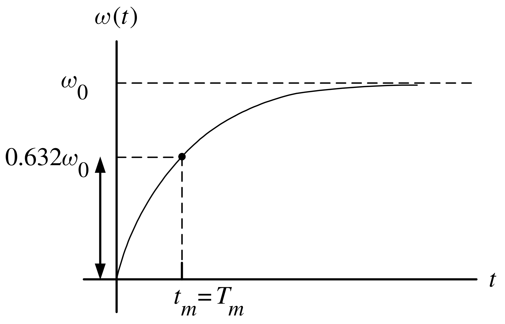
Apply a constant voltage \(V_{0}\) to the motor and graph its speed \(\omega(t)\).
With \(\omega_{0}\) denoting the final speed we have \(K_{m}=\omega _{0}/V_{0}.\)
Measure the time \(t_{m}\) the speed reaches \(1-e^{-1}=0.632\) of its final value \(\omega_{0}.\)
Then \(T_{m}=t_{m}\).
The motor’s transfer function is \(G(s)=\dfrac{K_{m}}{T_{m}s+1}.\)
Or \(G(s)=\dfrac{b}{s+a}\) with \(a=1/T_{m}\) and \(b=K_{m}/T_{m}.\)
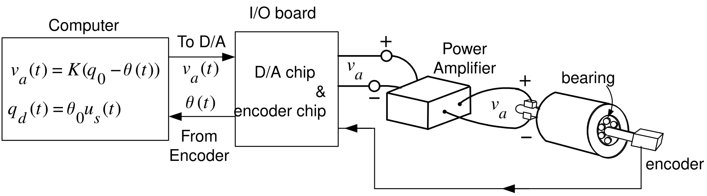
The computer reads in \(\theta(t)\) and sends out a value for \(v_{a}(t)\) to the D/A.
We want the motor rotate to the angle \(\theta_{0}\).
Let the reference (desired) motor angle be \(\theta_{d}(t)=\theta_{0}u_{s}(t).\)
Use proportional control, i.e., \(v_{a}(t)=K\!\left( \theta_{d}(t)-\theta(t)\right)\)
Block diagram model
- \(a>0,b>0\) and \(K>0.\)
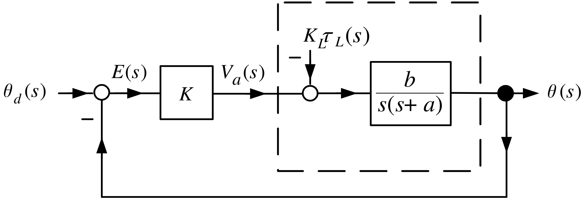

With \(\tau_{L}=0\) we have
\[ C(s)=\frac{\dfrac{bK}{s\left( s+a\right) }}{1+\dfrac{bK}{s\left( s+a\right) }}R(s)=\frac{bK}{s^{2}+as+bK}R(s). \]
Closed-loop transfer function
\[ \frac{C(s)}{R(s)}=\frac{bK}{s^{2}+as+bK} \]
With \(R(s)=R_{0}/s,\) set \(\omega_{n}^{2}\triangleq bK>0,\) and \(2\zeta\omega_{n}\triangleq a\) or \(\zeta\triangleq\dfrac{a}{2\omega_{n}}>0\).
\[ C(s)=\frac{\omega_{n}^{2}}{s^{2}+2\zeta\omega_{n}s+\omega_{n}^{2}}\frac{R_{0}}{s}. \]
\(\zeta\) is referred to as the damping ratio.
\(\omega_{n}\) is the natural frequency.
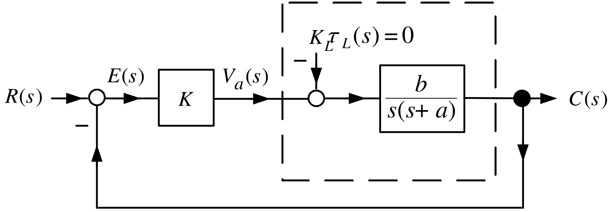
\(\zeta>0\) and \(\omega_{n}>0\) so that
\[ sC(s)=\frac{\omega_{n}^{2}}{s^{2}+2\zeta\omega_{n}s+\omega_{n}^{2}}R_{0} \]
is stable. By the FVT we have
\[ c(\infty)\triangleq\lim_{t\rightarrow\infty}c(t)=\lim_{s\rightarrow 0}sC(s)=\lim_{s\rightarrow0}s\frac{\omega_{n}^{2}}{s^{2}+2\zeta\omega _{n}s+\omega_{n}^{2}}\frac{R_{0}}{s}=R_{0}. \]
Thus \(c(t)\rightarrow R_{0}\) as \(t\rightarrow\infty.\)
\[ C(s)=\underset{G(s)}{\underbrace{\frac{\omega_{n}^{2}}{s^{2}+2\zeta\omega _{n}s+\omega_{n}^{2}}}}\underset{\text{input}}{\underbrace{\frac{R_{0}}{s}}} \]
The poles of \(G(s)\) are the roots of \(s^{2}+2\zeta\omega_{n}s+\omega_{n}^{2}=0\):
\[ p_{i}=\frac{-2\zeta\omega_{n}\pm\sqrt{(2\zeta\omega_{n})^{2}-4\omega_{n}^{2}}}{2}=-\zeta\omega_{n}\pm\sqrt{(\zeta^{2}-1)\omega_{n}^{2}}=-\zeta\omega_{n}\pm\omega_{n}\sqrt{\zeta^{2}-1}. \]
Four cases:
\[ \begin{array} [c]{rll}0<\zeta<1 & & p_{1},p_{2}=-\zeta\omega_{n}\pm j\omega_{n}\sqrt{1-\zeta^{2}}\\ & & \\ \zeta=1 & & p_{1},p_{2}=-\omega_{n}\\ & & \\ \zeta>1 & & p_{1}=-\zeta\omega_{n}+\omega_{n}\sqrt{\zeta^{2}-1},\text{ }p_{2}=-\zeta\omega_{n}-\omega_{n}\sqrt{\zeta^{2}-1}\\ & & \\ \zeta=0 & & p_{1},p_{2}=\pm j\omega_{n}\end{array} \]
Both poles in the open LHP for \(\zeta>0\) making \(G(s)\) stable.
If \(\zeta=0\), then the poles are on the \(j\omega\) axis at \(\pm j\omega_{n}\).

Pole locations for \(0<\zeta<1,\) \(p_{1},p_{2}=-\zeta\omega_{n}\pm j\omega_{n}\sqrt{1-\zeta^{2}}\)
\(\omega_{d}\triangleq\omega_{n}\sqrt{1-\zeta^{2}}\) is the damped frequency.
\[ \begin{aligned} \left\vert p_{i}\right\vert ^{2}=\left\vert -\zeta\omega_{n}\pm j\omega _{n}\sqrt{1-\zeta^{2}}\right\vert ^{2} & =(-\zeta\omega_{n})^{2}+\left( \pm\omega_{n}\sqrt{1-\zeta^{2}}\right) ^{2}\\ & =\zeta^{2}\omega_{n}^{2}+\omega_{n}^{2}(1-\zeta^{2})\\ & =\omega_{n}^{2}. \end{aligned} \]
For \(0\leq\zeta\leq1,\) poles are on a semicircle of radius of \(\omega_{n}\).
\(\tan(\phi)=\sqrt{1-\zeta^{2}}/\zeta\).
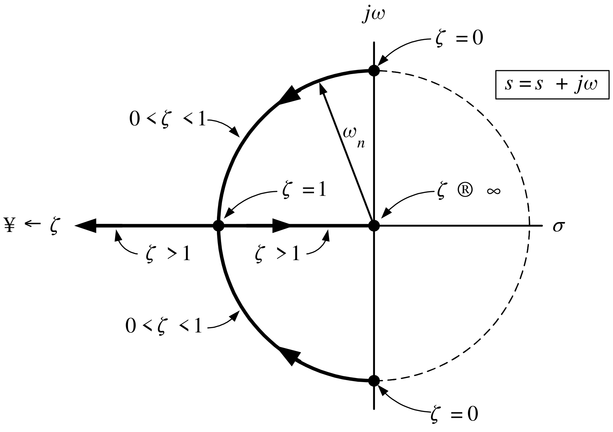
\[ \begin{array} [c]{cl}0<\zeta<1 & p_{1},p_{2}=-\zeta\omega_{n}\pm j\omega_{n}\sqrt{1-\zeta^{2}}\\ & \\ \zeta=1 & p_{1},p_{2}=-\omega_{n}\\ & \\ \zeta>1 & p_{1}=-\zeta\omega_{n}+\omega_{n}\sqrt{\zeta^{2}-1},\text{ }p_{2}=-\zeta\omega_{n}-\omega_{n}\sqrt{\zeta^{2}-1}\\ & \\ \zeta=0 & p_{1},p_{2}=\pm j\omega_{n}\end{array} \]
Consider \(0<\zeta<1\) so \(p_{1},p_{2}=-\zeta\omega_{n}\pm j\omega_{n}\sqrt{1-\zeta^{2}}.\)
\[ \begin{aligned} C(s) & =\frac{\omega_{n}^{2}}{s^{2}+2\zeta\omega_{n}s+\omega_{n}^{2}}\frac{R_{0}}{s}\\ & =\frac{\omega_{n}^{2}}{\left( s-(-\zeta\omega_{n}+j\omega_{n}\sqrt {1-\zeta^{2}})\right) \!\left( s-(-\zeta\omega_{n}-j\omega_{n}\sqrt {1-\zeta^{2}})\right) }\frac{R_{0}}{s}\\ & =\frac{R_{0}}{s}+\frac{\beta}{s-(-\zeta\omega_{n}+j\omega_{n}\sqrt {1-\zeta^{2}})}+\frac{\beta^{\ast}}{s-(-\zeta\omega_{n}-j\omega_{n}\sqrt{1-\zeta^{2}})}.\\ & \\ & \\ \text{So }c(t) & =R_{0}u_{s}(t)+\beta e^{-\zeta\omega_{n}t}e^{+j\omega _{n}\sqrt{1-\zeta^{2}}t}+\beta^{\ast}e^{-\zeta\omega_{n}t}e^{-j\omega_{n}\sqrt{1-\zeta^{2}}t}\\ & \\ & =R_{0}u_{s}(t)+2|\beta|e^{-\zeta\omega_{n}t}\!\cos\!\left( \!\omega _{n}\sqrt{1-\zeta^{2}}t+\angle\beta\right) . \end{aligned} \]
Transient dies out according to the real part \(-\zeta\omega_{n}\) of the poles.
Typically want \(0.6\leq\zeta\leq0.8\)
Compute \(c(t)\):
\[ \begin{aligned} C(s) & =\frac{\omega_{n}^{2}}{s^{2}+2\zeta\omega_{n}s+\omega_{n}^{2}}\frac{R_{0}}{s}=\frac{R_{0}}{s}+\frac{A_{1}(s+\zeta\omega_{n})+A_{2}\omega _{n}\sqrt{1-\zeta^{2}}}{(s+\zeta\omega_{n})^{2}+\omega_{n}^{2}(1-\zeta^{2})}.\\ \Longrightarrow\text{ }\omega_{n}^{2}R_{0} & =\left( s^{2}+2\zeta \omega_{n}s+\omega_{n}^{2}\right) \!R_{0}+s\!\left( \!A_{1}(s+\zeta\omega_{n})+A_{2}\omega_{n}\sqrt{1-\zeta^{2}}\!\right) \end{aligned} \]
Equating powers of \(s\):
\[ \begin{array} [c]{cl}s^{2} & 0=(R_{0}+B)s^{2}\Longrightarrow A_{1}=-R_{0}\\ s^{1} & 0=\left( 2\zeta\omega_{n}R_{0}+A_{1}\zeta\omega_{n}+A_{2}\omega _{n}\sqrt{1-\zeta^{2}}\right) \!s\Longrightarrow A_{2}=-R_{0}\zeta /\sqrt{1-\zeta^{2}}\\ s^{0} & \omega_{n}^{2}R_{0}=\omega_{n}^{2}R_{0}\end{array} \]
Then
\[ C(s)=\frac{R_{0}}{s}-R_{0}\frac{s+\zeta\omega_{n}}{(s+\zeta\omega_{n})^{2}+\omega_{n}^{2}(1-\zeta^{2})}-\frac{R_{0}\zeta}{\sqrt{1-\zeta^{2}}}\frac{\omega_{n}\sqrt{1-\zeta^{2}}}{(s+\zeta\omega_{n})^{2}+\omega_{n}^{2}(1-\zeta^{2})} \]
From previous slide:
\[ C(s)=\frac{R_{0}}{s}-R_{0}\frac{s+\zeta\omega_{n}}{(s+\zeta\omega_{n})^{2}+\omega_{n}^{2}(1-\zeta^{2})}-\frac{R_{0}\zeta}{\sqrt{1-\zeta^{2}}}\frac{\omega_{n}\sqrt{1-\zeta^{2}}}{(s+\zeta\omega_{n})^{2}+\omega_{n}^{2}(1-\zeta^{2})} \]
\[ \begin{aligned} e^{\sigma t}\sin(\omega t)u_{s}(t) & \leftrightarrow\frac{\omega}{(s-\sigma)^{2}+\omega^{2}}\\ e^{\sigma t}\cos(\omega t)u_{s}(t) & \leftrightarrow\frac{s-\sigma}{(s-\sigma)^{2}+\omega^{2}}. \end{aligned} \]
For \(t>0\) we have
\[ \begin{aligned} c(t) & =R_{0}-R_{0}e^{-\zeta\omega_{n}t}\cos\!\left( \omega_{n}\sqrt {1-\zeta^{2}}t\right) -R_{0}\frac{\zeta}{\sqrt{1-\zeta^{2}}}e^{-\zeta\omega_{n}t}\sin\!\left( \omega_{n}\sqrt{1-\zeta^{2}}t\right) \\ & =R_{0}-R_{0}\frac{e^{-\zeta\omega_{n}t}}{\sqrt{1-\zeta^{2}}}\left( \sqrt{1-\zeta^{2}}\cos\!\left( \omega_{n}\sqrt{1-\zeta^{2}}t\right) +\right. \left. \zeta\sin\!\left( \omega_{n}\sqrt{1-\zeta^{2}}t\right) \right) \\ & =R_{0}-R_{0}\frac{e^{-\zeta\omega_{n}t}}{\sqrt{1-\zeta^{2}}}\left( \sin\left( \phi\right) \cos\!\left( \omega_{n}\sqrt{1-\zeta^{2}}t\right) +\right. \left. \cos\left( \phi\right) \sin\!\left( \omega_{n}\sqrt{1-\zeta^{2}}t\right) \right) \\ & =R_{0}-R_{0}\frac{e^{-\zeta\omega_{n}t}}{\sqrt{1-\zeta^{2}}}\sin\!\left( \omega_{n}\sqrt{1-\zeta^{2}}t+\phi\right) \end{aligned} \]
where \(\sin\left( \phi\right) \triangleq\sqrt{1-\zeta^{2}},\) \(\cos\left( \phi\right) \triangleq\zeta\) so \(\phi\triangleq\tan^{-1}\!\left( \dfrac{\sqrt{1-\zeta^{2}}}{\zeta}\right) .\)
\[ c(t)=R_{0}u_{s}(t)-R_{0}\frac{e^{-\zeta\omega_{n}t}}{\sqrt{1-\zeta^{2}}}\sin\!\left( \omega_{n}\sqrt{1-\zeta^{2}}t+\phi\right) \!u_{s}(t)\text{ for }0<\zeta<1 \]
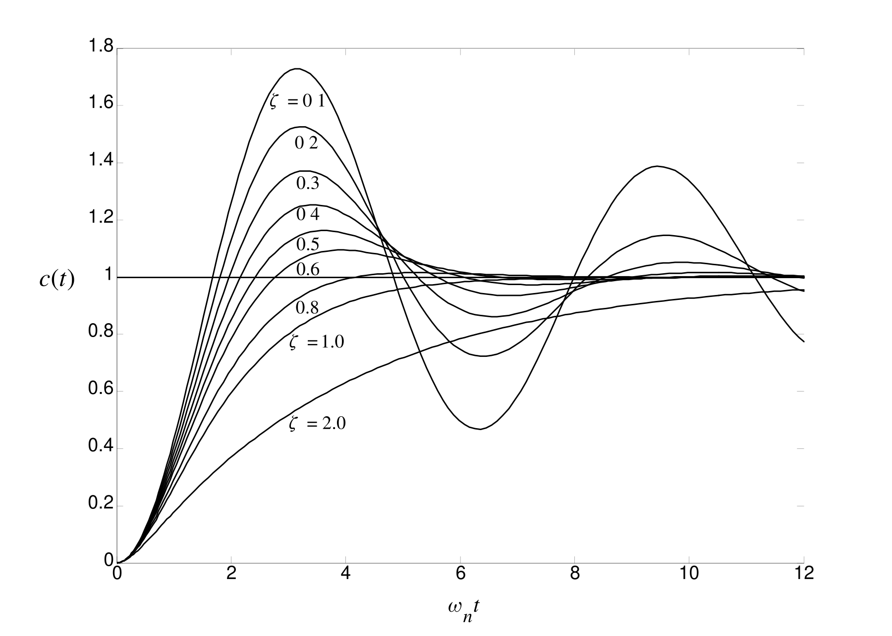
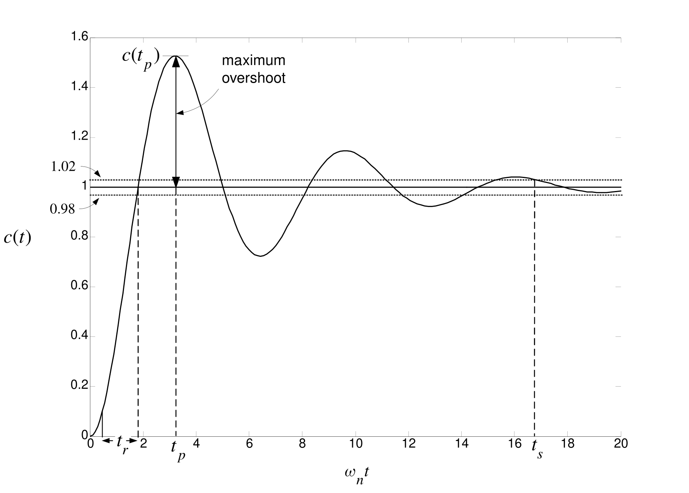
For \(0<\zeta<1\) the output response is oscillatory with frequency \(\omega _{d}=\omega_{n}\sqrt{1-\zeta^{2}}\).
We next compute the peak time \(t_{p}\) and the peak value \(c(t_{p})\).
\[ \begin{aligned} c(t) & =R_{0}-R_{0}e^{-\zeta\omega_{n}t}\cos\!\left( \!\omega_{n}\sqrt{1-\zeta^{2}}t\!\right) -R_{0}\frac{\zeta}{\sqrt{1-\zeta^{2}}}e^{-\zeta\omega_{n}t}\sin\!\left( \!\omega_{n}\sqrt{1-\zeta^{2}}t\!\right) \\ & =R_{0}-R_{0}e^{\sigma t}\cos\left( \omega_{d}t\right) +R_{0}\frac{\sigma }{\omega_{d}}e^{\sigma t}\sin\left( \omega_{d}t\right) \text{ where }\sigma=-\zeta\omega_{n}. \end{aligned} \]
Differentiate:
\[ \begin{aligned} \!\!\!\!\!\frac{d}{dt}c(t)\!\!\!\! & =\!\!\!\!-R_{0}\sigma e^{\sigma t}\cos(\omega_{d}t)+R_{0}\omega_{d}e^{\sigma t}\sin(\omega_{d}t)+R_{0}\frac{\sigma^{2}}{\omega_{d}}e^{\sigma t}\sin(\omega_{d}t)+R_{0}\sigma e^{\sigma t}\cos(\omega_{d}t)\\ & =R_{0}e^{\sigma t}\!\left( \frac{\sigma^{2}}{\omega_{d}}+\omega_{d}\right) \!\sin\left( \omega_{d}t\right) . \end{aligned} \]
\(\dfrac{d}{dt}c(t)=0\) \(\Longrightarrow\) \(\sin\left( \omega_{d}t_{p}\right) =0\) or
\[ t_{p}=\frac{\pi}{\omega_{d}}=\frac{\pi}{\omega_{n}\sqrt{1-\zeta^{2}}}\text{ }\left( \Longrightarrow\sigma t_{p}=-\pi\zeta/\sqrt{1-\zeta^{2}}\right) . \]
The value of \(c(t)\) at \(t_{p}\) is
\[ \begin{aligned} \!\!\!\!\!\!\!\!c(t_{p})=R_{0}-R_{0}e^{\sigma t_{p}}\cos(\omega_{d}t_{p})+R_{0}\frac{\sigma}{\omega_{d}}e^{\sigma t_{p}}\sin(\omega_{d}t_{p})\!\!\! & =\!\!\!\!\!\!R_{0}-R_{0}e^{\sigma t_{p}}\cos(\pi)\\ \!\!\!\! & =\!\!\!\!\!\!R_{0}+R_{0}e^{-\pi\zeta/\!\!\!\sqrt{1-\zeta^{2}}}\!. \end{aligned} \]
We just showed
\[ t_{p}=\frac{\pi}{\omega_{d}}=\frac{\pi}{\omega_{n}\sqrt{1-\zeta^{2}}}. \]
and
\[ \begin{aligned} c(t_{p})=R_{0}-R_{0}e^{\sigma t_{p}}\cos(\omega_{d}t_{p})+R_{0}\frac{\sigma }{\omega_{d}}e^{\sigma t_{p}}\sin(\omega_{d}t_{p}) & =R_{0}-R_{0}e^{\sigma t_{p}}\cos(\pi)\\ & =R_{0}+R_{0}e^{-\pi\zeta/\sqrt{1-\zeta^{2}}}. \end{aligned} \]
- Fractional Overshoot \(M_{p}:\)
\[ M_{p}\triangleq\frac{c(t_{p})-c(\infty)}{c(\infty)}=\frac{(R_{0}+R_{0}e^{-\pi\zeta/\sqrt{1-\zeta^{2}}})-R_{0}}{R_{0}}=e^{-\pi\zeta/\sqrt{1-\zeta ^{2}}} \]
- The Percent Overshoot is \(100\times M_{p}=100e^{-\pi\zeta /\sqrt{1-\zeta^{2}}}.\)
From previous slide:
\[ M_{p}\triangleq\frac{c(t_{p})-c(\infty)}{c(\infty)}=e^{-\pi\zeta/\sqrt {1-\zeta^{2}}} \]
From the step response measure \(t_{p}\) and \(c(t_{p}).\)
Compute \(M_{p}\triangleq\dfrac{c(t_{p})-c(\infty)}{c(\infty)}.\)
Compute \(\zeta\) as follows:
\[ \begin{aligned} \ln(M_{p})=-\pi\zeta/\sqrt{1-\zeta^{2}} & \Longrightarrow(1-\zeta^{2})\ln ^{2}(M_{p})=\pi^{2}\zeta^{2}\\ & \Longrightarrow\text{ }\zeta=\sqrt{\frac{\ln^{2}(M_{p})}{\pi^{2}+\ln ^{2}(M_{p})}}. \end{aligned} \]
Compute \(\omega_{n}\) as follows:
\[ \begin{aligned} t_{p} & =\frac{\pi}{\omega_{n}\sqrt{1-\zeta^{2}}}\\ \Longrightarrow\text{ }\omega_{n} & =\frac{\pi}{t_{p}\sqrt{1-\zeta^{2}}}. \end{aligned} \]
From previous slide:
\[ \zeta=\sqrt{\frac{\ln^{2}(M_{p})}{\pi^{2}+\ln^{2}(M_{p})}}\text{ and }\omega_{n}=\frac{\pi}{t_{p}\sqrt{1-\zeta^{2}}} \]
As
\[ C(s)=\frac{Kb}{s^{2}+as+Kb}\frac{R_{0}}{s}=\frac{\omega_{n}^{2}}{s^{2}+2\zeta\omega_{n}s+\omega_{n}^{2}}\frac{R_{0}}{s} \]
we have
\[ \begin{aligned} Kb & =\omega_{n}^{2}\\ & \\ a & =2\zeta\omega_{n}. \end{aligned} \]
Motor Parameters:
\[ \begin{aligned} b & =\omega_{n}^{2}/K\\ & \\ a & =2\zeta\omega_{n}. \end{aligned} \]
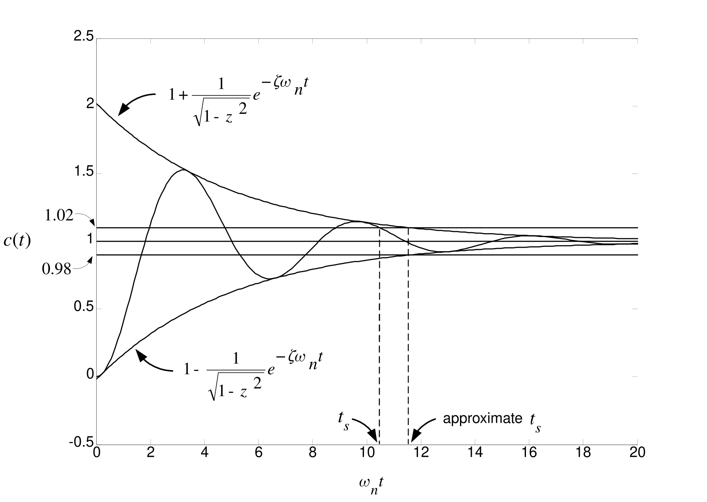
\(t_{s}\): The first time \(c(t)\) stays within \(2\%\) of its final value.
\(t_{s}\) approximation: Compute the time the envelope of \(c(t)\) intersects \((1\pm0.02)R_{0}\).
\[ c(t)=R_{0}u_{s}(t)-R_{0}\frac{e^{-\zeta\omega_{n}t}}{\sqrt{1-\zeta^{2}}}\sin\!\left( \omega_{n}\sqrt{1-\zeta^{2}}t+\phi\right) u_{s}(t). \]
The envelope of \(c(t)\) is given by
\[ R_{0}\pm R_{0}\frac{e^{-\zeta\omega_{n}t}}{\sqrt{1-\zeta^{2}}} \]
An an upper bound \(t_{sb}\) on the settling time \(t_{s}\) is a solution to
\[ R_{0}+R_{0}\frac{e^{-\zeta\omega_{n}t_{sb}}}{\sqrt{1-\zeta^{2}}}=1.02R_{0}. \]
Solve for \(t_{sb}\) as follows.
\[ \frac{e^{-\zeta\omega_{n}t_{sb}}}{\sqrt{1-\zeta^{2}}}=0.02\text{ or }e^{-\zeta\omega_{n}t_{sb}}=0.02\sqrt{1-\zeta^{2}}\text{ or }-\zeta\omega_{n}t_{sb}=\ln\!\left( 0.02\sqrt{1-\zeta^{2}}\right) \!. \]
Finally
\[ t_{s}\leq t_{sb}=-\frac{\ln\!\left( 0.02\sqrt{1-\zeta^{2}}\right) }{\zeta\omega_{n}}. \]
\(t_{s}\)
From previous slide:
\[ t_{s}\leq t_{sb}=-\frac{\ln\!\left( 0.02\sqrt{1-\zeta^{2}}\right) }{\zeta\omega_{n}}. \]
The envelope approach gives an upper bound for the settling time.
\(t_{sb}\) goes to \(+\infty\) as either \(\zeta\rightarrow1\) or as \(\zeta\rightarrow0\).
\(\Longrightarrow\) \(t_{sb}\) is not a useful approximation for these two cases.
We want the overshoot to be small which means \(\zeta\) is close to \(1.\)
Often in textbooks they set \(\sqrt{1-\zeta^{2}}\approx1\) (implying \(\zeta\) small!) to obtain
\[ t_{s}\leq t_{sb}\approx-\frac{\ln(0.02)}{\zeta\omega_{n}}\approx\dfrac {4}{\zeta\omega_{n}}. \]
Take \(\zeta=1\) so there is no overshoot.
\(C(s)=\dfrac{\omega_{n}^{2}}{s^{2}+2\zeta\omega_{n}s+\omega_{n}^{2}}\dfrac{R_{0}}{s}=\dfrac{\omega_{n}^{2}}{(s+\omega_{n})^{2}}\dfrac{R_{0}}{s}=\dfrac{1}{s}R_{0}-\dfrac{R_{0}}{s+\omega_{n}}-\omega_{n}\dfrac{R_{0}}{\left( s+\omega_{n}\right) ^{2}}.\)
\(c(t)=R_{0}-R_{0}(e^{-t\omega_{n}}+t\omega_{n}e^{-t\omega_{n}}).\)
At \(t=\left. \dfrac{4}{\zeta\omega_{n}}\right\vert _{\zeta=1}=\dfrac {4}{\omega_{n}}\):
\[ e^{-t_{s}\omega_{n}}+t_{s}\omega_{n}e^{-t_{s}\omega_{n}}=e^{-4}+4e^{-4}=5e^{-4}=0.092\approx0.1 \]
\(c(t)\) is within \(10\%\) of the final value \(R_{0}\) (rather than \(2\%\)).
Define \(t_{s}\triangleq\dfrac{4}{\zeta\omega_{n}}\) even if \(\zeta\) is not 1.
Define the time constant of the complex-conjugate pair of closed-loop poles by
\[ \left\vert \dfrac{1}{\sigma}\right\vert =\left\vert \dfrac{1}{-\zeta\omega _{n}}\right\vert =\dfrac{1}{\zeta\omega_{n}}. \]
\(t_{s}\) is defined to be four time constants long.
The further in the LHP the CLPs are located, the faster the transients die out and thus the faster the system reaches its final value.
\(t_{r}\)
\(t_{r}\) is the amount of time for \(c(t)\) to go from \(0.1R_{0}\) to the first time it reaches \(R_{0}\).
Note: For \(\zeta<0.5,\) \(c(t)=0.1R_{0}\) at \(\omega_{n}t\approx0.2\) and \(c(t)=R_{0}\) at \(\omega_{n}t\approx2.\)
\(t_{r}\)
Typical textbook approximation: For \(\zeta<0.5\)
\[ \begin{aligned} c(t_{1}) & =0.1R_{0}\text{ at }\omega_{n}t_{1}\approx0.2\\ & \\ c(t_{2}) & =R_{0} \text{ at }\omega_{n}t_{2}\approx2. \end{aligned} \]
Then
\[ t_{r}=t_{2}-t_{1}\approx\frac{2-0.2}{\omega_{n}}=\frac{1.8}{\omega_{n}}. \]
- Not very useful as we want \(\zeta\) to be close to 1 to have small overshoot!
\(M_{p},t_{p},t_{s}\)
Second-order system with a step input:
\[ C(s)=\dfrac{\omega_{n}^{2}}{s^{2}+2\zeta\omega_{n}s+\omega_{n}^{2}}\dfrac{R_{0}}{s}. \]
Then
\[ \begin{aligned} M_{p} & \triangleq\frac{c(t_{p})-c(\infty)}{c(\infty)}=e^{-\pi\zeta /\sqrt{1-\zeta^{2}}}\text{ with }t_{p}=\frac{\pi}{\omega_{n}\sqrt {1-\zeta^{2}}}\\ & \\ t_{s} & =\frac{4}{\zeta\omega_{n}},\dfrac{5}{\zeta\omega_{n}},\dfrac{6}{\zeta\omega_{n}}\text{ for }10\%,4\%,2\%\text{ of the final value and }\zeta\text{ close to 1.}\\ & \\ t_{r} & =\frac{1.8}{\omega_{n}}\text{ for }\zeta<0.5. \end{aligned} \]
In general, we are concerned about overshoot, settling time, and rise time.
However, these expressions are only valid for 2\(^{nd}\)-order systems with no zeros.
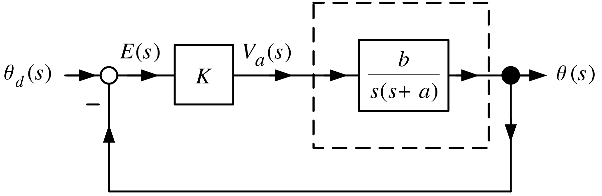
\[ \frac{\theta(s)}{\theta_{d}(s)}=\frac{K\dfrac{b}{s(s+a)}}{1+K\dfrac{b}{s(s+a)}}=\frac{Kb}{s^{2}+as+Kb}. \]
Let \(b=1,\) \(a=4\), and \(\theta_{d}(s)=\dfrac{\theta_{0}}{s}\) so
\[ \theta(s)=\frac{K}{s^{2}+4s+K}\frac{\theta_{0}}{s}. \]
For \(K>0\) the quadratic formula shows the roots of \(s^{2}+4s+K\) are in the open LHP.
Thus \(s\theta(s)=\dfrac{K}{s^{2}+4s+K}\theta_{0}\) is stable.
By the FVT
\[ \theta(\infty)=\lim_{t\rightarrow\infty}\theta(t)=\lim_{s\rightarrow0}s\theta(s)=\theta_{0}. \]
The behavior of the \(\theta(t)\) as it goes to \(\theta_{0}\) is determined by the location of the CLPs.
Need to find the pole locations as \(K\) is varied from \(0\) to \(\infty\).
Solving \(s^{2}+4s+K=0\) gives
\[ s=\frac{-4\pm\sqrt{16-4K}}{2}=-2\pm\sqrt{4-K}. \]
The closed-loop poles are
\[ p_{i}=\left\{ \begin{array} [c]{cl}-2\pm\sqrt{4-K}, & 0\leq K\leq4\\ -2\pm j\sqrt{K-4}, & 4<K. \end{array} \right. \]
\[ \begin{array}{c|l} \hline K & \text{Closed-Loop Poles}\\\hline 0 & s=0,-4\\\hline 2 & s=-2\pm\sqrt{2}=-3.414,-0.596\\\hline 4 & s=-2,-2\\\hline 8 & s=-2\pm2j\\\hline 13 & s=-2\pm3j\\\hline \end{array} \]
\[ \begin{array}{c|l} \hline K & \text{Closed-Loop Poles}\\\hline 0 & s=0,-4\\\hline 2 & s=-2\pm\sqrt{2}=-3.414,-0.596\\\hline 4 & s=-2,-2\\\hline 8 & s=-2\pm2j\\\hline 13 & s=-2\pm3j\\\hline \end{array} \]
Root Locus: Sketch of the closed-loop poles as \(K\) varies.
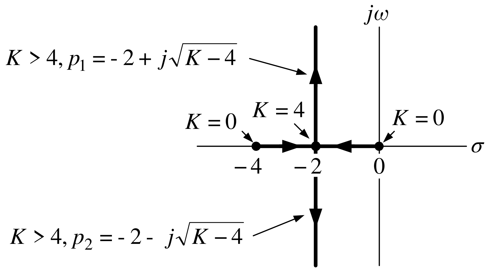
Both poles are in the open left half-plane for \(K>0.\)
For \(K>4\), complex conjugate closed-loop poles result in an oscillatory response.
Want poles as far in the LHP as possible so take \(K\geq4\).
Don’t take \(K\) too large as this would command a large voltage to the amplifier.
% RootLocus_G(s) = K*b/(s2+a*s)
% G_cl(s) = KG(s)/(1 + KG(s)) = Kb/(s2 + as + Kb)
close all; clear; clc
%
a = 4;b = 1;
% Open loop transfer function G(s) = b/(s*(s+a)) = b/(s2+a*s)
den = [1 a 0]; num = [b]; tf_openloop = tf(num,den);
%
% Plot the CLPs for K going from 0 to 100 in steps of 1.
K = [0:1:100]; rlocus(tf_openloop,K)
%
% Make the linewidth thicker, the marker size and font size bigger.
h = findobj(gca, ’Type’, ’line’);
set(h, ’LineWidth’, 4); set(h, ’MarkerSize’, 15); set(gca,’FontSize’,20)
%
% Set range of x-axis [-5,0] and y-axis [-10,10]
v = [-5 0 -10 10]; axis(v);
%
title(’G(s)= b/(s2+as)’,’FontSize’,20)
xlabel(’Re(s)’,’FontSize’,20); ylabel (’Im(s)’,’FontSize’,20)
%
K = 6.25; p = rlocus(num,den,K) % Gives the CLP for this value of K
Choose \(K\) so the damping ratio \(\zeta\) is \(0.8\).
\[ \theta(s)=\frac{K}{s^{2}+4s+K}\frac{\theta_{0}}{s}=\frac{\omega_{n}^{2}}{s^{2}+2\zeta\omega_{n}s+\omega_{n}^{2}}\frac{\theta_{0}}{s} \]
Equate coefficients:
\[ \begin{aligned} s^{2}+4s+K & =s^{2}+2\zeta\omega_{n}s+\omega_{n}^{2}\\ \Longrightarrow4 & =2\zeta\omega_{n},\text{ }K=\omega_{n}^{2}\\ \Longrightarrow K & =\left. \left( \frac{4}{2\zeta}\right) ^{2}\right\vert _{\zeta=0.8}=6.25. \end{aligned} \]
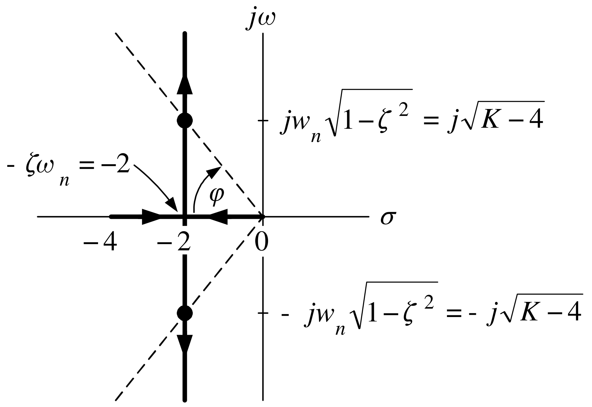
\[ \begin{aligned} s^{2}+4s+K & =s^{2}+2\zeta\omega_{n}s+\omega_{n}^{2}\\ \Longrightarrow s & =-2\pm j\sqrt{K-4}\\ & =-\zeta\omega_{n}\pm j\omega_{n}\sqrt{1-\zeta^{2}} \end{aligned} \]

\[ \begin{aligned} \tan(\phi) & =\dfrac{\omega_{n}\sqrt{1-\zeta^{2}}}{\zeta\omega_{n}}=\dfrac{\sqrt{K-4}}{2}\\ \Longrightarrow K & =4\dfrac{1-\zeta^{2}}{\zeta^{2}}+4=\dfrac{4}{\zeta^{2}}=\dfrac{4}{0.64}=6.25. \end{aligned} \]
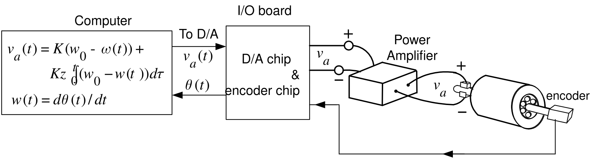
\(\omega(t)\) is found by numerically differentiating the measured \(\theta(t).\)
The controller is \(v_{a}(t)=K(\omega_{0}-\omega(t))+Kz\int_{0}^{t}(\omega_{0}-\omega(\tau))d\tau\).
\(\omega_{0}\) is the desired speed.
\(E(s)=\dfrac{\omega_{0}}{s}-\omega(s)\) and \(V_{a}(s)=KE(s)+Kz\dfrac {1}{s}E(s)=K\dfrac{s+z}{s}E(s).\)
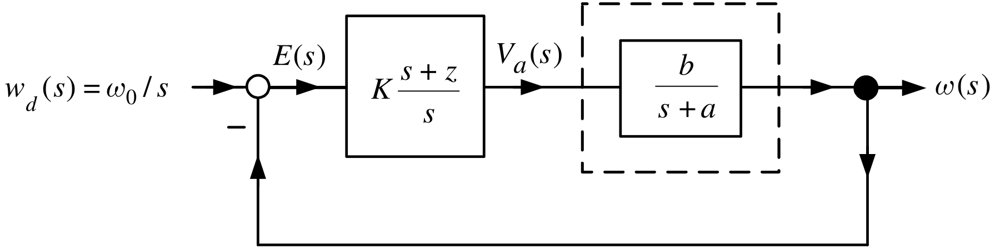
This is a proportional plus integral (PI) controller.

\[ \!\!\!\!\!\omega(s)=\frac{\dfrac{K(s+z)}{s}\dfrac{b}{s+a}}{1+\dfrac{K(s+z)}{s}\dfrac{b}{s+a}}\frac{\omega_{0}}{s}=\frac{Kb(s+z)}{s^{2}+as+Kb(s+z)}\frac{\omega_{0}}{s}=\underset{\text{closed-loop transfer function}}{\underbrace{\frac{Kb(s+z)}{s^{2}+(a+Kb)s+Kbz}}}\text{ }\underset{\text{input}}{\underbrace{\frac{\omega_{0}}{s}}}. \]
Recall for the DC motor that \(a>0,b>0.\)
With \(K>0,z>0\) the roots of \(s^{2}+(a+Kb)s+Kbz=0\) are in the open LHP.
Thus \(s\omega(s)=\dfrac{Kb(s+z)}{s^{2}+(a+Kb)s+Kbz}\omega_{0}\) is stable.
By the FVT
\[ \omega(\infty)=\lim_{s\rightarrow0}s\omega(s)=\omega_{0}. \]
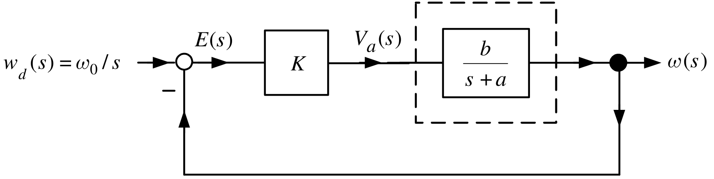
\[ \omega(s)=\frac{K\dfrac{b}{s+a}}{1+K\dfrac{b}{s+a}}\frac{\omega_{0}}{s}=\frac{Kb}{s+a+Kb}\frac{\omega_{0}}{s}. \]
Recall for the DC motor that \(a>0,b>0.\)
With \(K>0,\) the roots of \(s+a+Kb=0\) are in the open LHP.
Thus \(s\omega(s)=\dfrac{Kb}{s+a+Kb}\omega_{0}\) is stable.
By the FVT
\[ \omega(\infty)=\lim_{s\rightarrow0}s\omega(s)=\frac{Kb}{a+Kb}\omega_{0}\neq\omega_{0}. \]
- If \(K\) is large then \(\omega(\infty)\approx\omega_{0}.\)
End of Digression

\[ \omega(s)=\frac{\dfrac{K(s+z)}{s}\dfrac{b}{s+a}}{1+\dfrac{K(s+z)}{s}\dfrac {b}{s+a}}\frac{\omega_{0}}{s}=\frac{Kb(s+z)}{s^{2}+(a+Kb)s+Kbz}\frac {\omega_{0}}{s}. \]
Let \(C(s)\triangleq\omega(s)\) and set \(\omega_{n}^{2}\triangleq Kbz,\) \(2\zeta\omega_{n}\triangleq a+Kb,\) \(\alpha\triangleq\dfrac{z}{\zeta \omega_{n}}.\)
\(Kb=\dfrac{\omega_{n}^{2}}{z}=\dfrac{\omega_{n}}{\alpha\zeta}.\)
Write
\[ C(s)=\underset{\text{closed-loop transfer function}}{\underbrace{\frac {\omega_{n}}{\alpha\zeta}\frac{s+\alpha\zeta\omega_{n}}{s^{2}+2\zeta\omega _{n}s+\omega_{n}^{2}}}}\frac{\omega_{0}}{s}. \]
- What is the effect of the zero at \(s=-z=-\alpha\zeta\omega_{n}\) on the transient response?
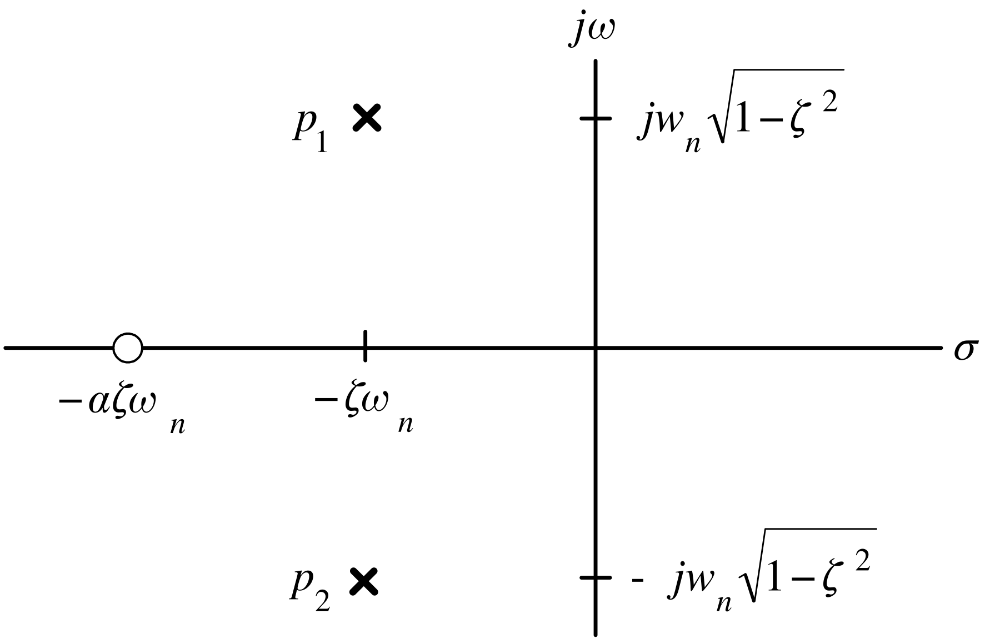
With \(\omega_{d}(s)=\dfrac{1}{s}\):
\[ \begin{aligned} C(s)=\frac{\omega_{n}}{\alpha\zeta}\frac{s+\alpha\zeta\omega_{n}}{s^{2}+2\zeta\omega_{n}s+\omega_{n}^{2}}\frac{1}{s} & =\underset{C_{1}(s)}{\underbrace{\frac{\omega_{n}^{2}}{s^{2}+2\zeta\omega_{n}s+\omega_{n}^{2}}\frac{1}{s}}}+\frac{1}{\alpha\zeta\omega_{n}}\underset{sC_{1}(s)}{\underbrace{s\frac{\omega_{n}^{2}}{s^{2}+2\zeta\omega_{n}s+\omega_{n}^{2}}\frac{1}{s}}}\\ & \rightarrow\frac{\omega_{n}^{2}}{s^{2}+2\zeta\omega_{n}s+\omega_{n}^{2}}\frac{1}{s}\text{ as }\alpha\rightarrow\infty. \end{aligned} \]
- As \(\alpha\rightarrow\infty,\) \(C(s)\) reduces to \(C_{1}(s)\) which is a second-order system without a zero.
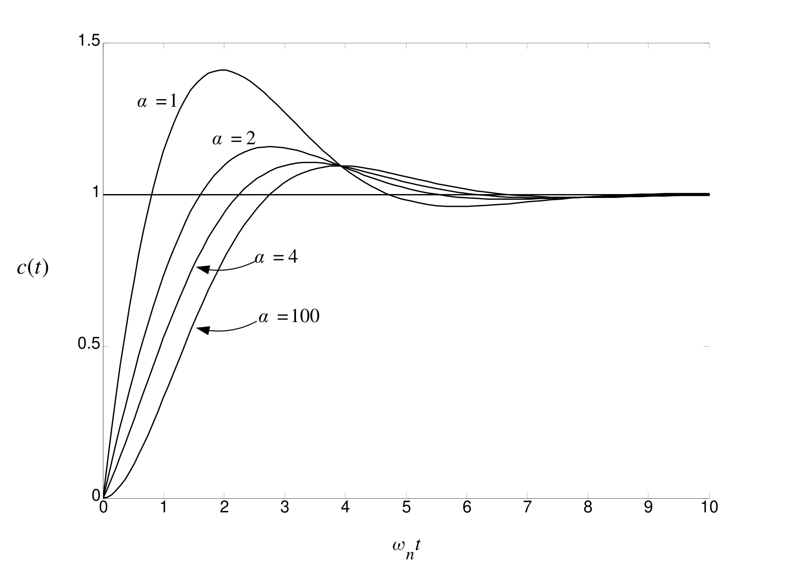
\[ c(t)=\mathcal{L}^{-1}\{C(s)\}=\mathcal{L}^{-1}\!\left\{ \frac{\omega_{n}}{\alpha\zeta}\frac{s+\alpha\zeta\omega_{n}}{s^{2}+2\zeta\omega_{n}s+\omega_{n}^{2}}\frac{1}{s}\right\} \]
For \(\alpha>>1\) \(C(s)\) is essentially a second-order system without a zero.
Much more overshoot compared to a \(2^{nd}\) order system without a zero.
\[ \begin{aligned} C(s) & =\frac{\omega_{n}^{2}}{s^{2}+2\zeta\omega_{n}s+\omega_{n}^{2}}\frac {1}{s}+\frac{1}{\alpha\zeta\omega_{n}}s\frac{\omega_{n}^{2}}{s^{2}+2\zeta\omega_{n}s+\omega_{n}^{2}}\frac{1}{s}=C_{1}(s)+\frac{1}{\alpha \zeta\omega_{n}}sC_{1}(s).\\ c(t) & =c_{1}(t)+\frac{1}{\alpha\zeta\omega_{n}}\frac{dc_{1}(t)}{dt}. \end{aligned} \]
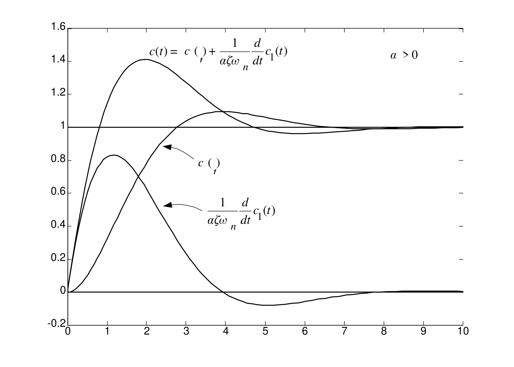
Suppose \(\alpha<0\) so the zero \(-\alpha\zeta\omega_{n}\) is in the open RHP.
This is called a non minimum phase zero.
Pole-Zero plot for \(0<\zeta<1.\)
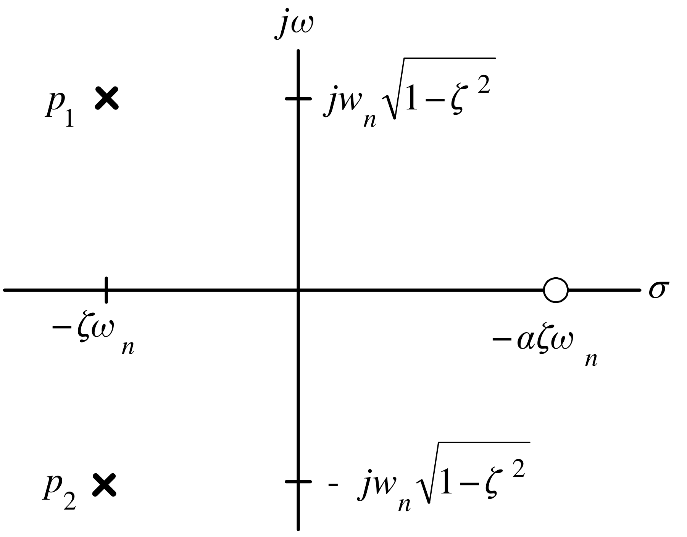
This system is still stable as the poles are in the open LHP so \(c(t)\rightarrow1\) as \(t\rightarrow\infty\).
\[ \begin{aligned} C(s)\!\! & =\!\!\frac{\omega_{n}^{2}}{s^{2}+2\zeta\omega_{n}s+\omega_{n}^{2}}\frac{1}{s}+\frac{1}{\alpha\zeta\omega_{n}}s\frac{\omega_{n}^{2}}{s^{2}+2\zeta\omega_{n}s+\omega_{n}^{2}}\frac{1}{s}=C_{1}(s)+\frac{1}{\alpha\zeta\omega_{n}}sC_{1}(s).\\ c(t)\!\! & =\!\!c_{1}(t)+\underset{<0}{\underbrace{\frac{1}{\alpha\zeta \omega_{n}}}}\frac{dc_{1}(t)}{dt}. \end{aligned} \]
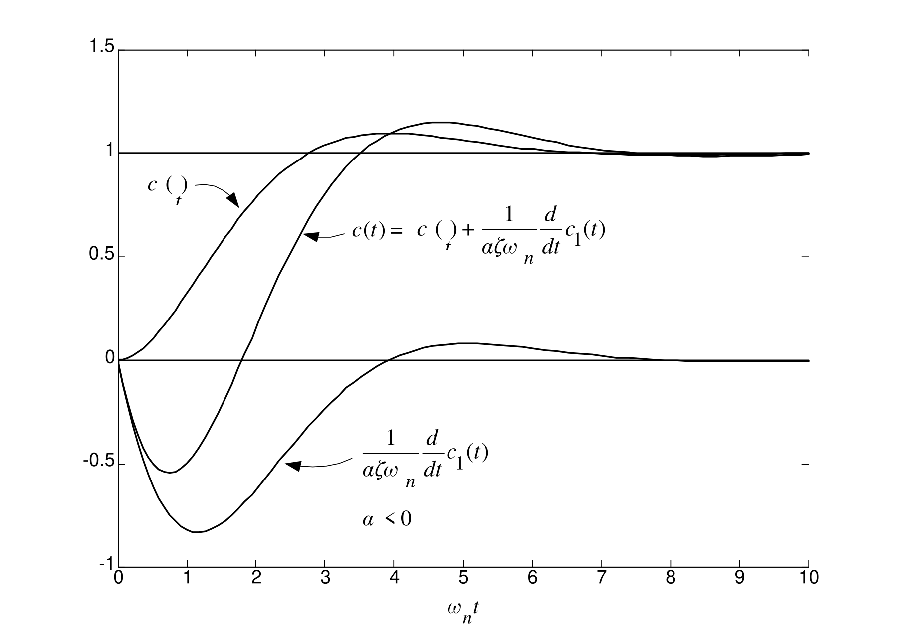
- \(c(t)\) goes negative before coming back positive - called undershoot.
With \(0<\zeta<1\) and \(\alpha>0\) let
\[ G(s)=\frac{\alpha\zeta\omega_{n}}{s+\alpha\zeta\omega_{n}}\frac{\omega_{n}^{2}}{s^{2}+2\zeta\omega_{n}s+\omega_{n}^{2}}. \]
The poles are
\[ \begin{aligned} p_{1} & =-\zeta\omega_{n}+j\omega_{n}\sqrt{1-\zeta^{2}}\\ p_{2} & =-\zeta\omega_{n}-j\omega_{n}\sqrt{1-\zeta^{2}}\\ p_{3} & =-\alpha\zeta\omega_{n}. \end{aligned} \]
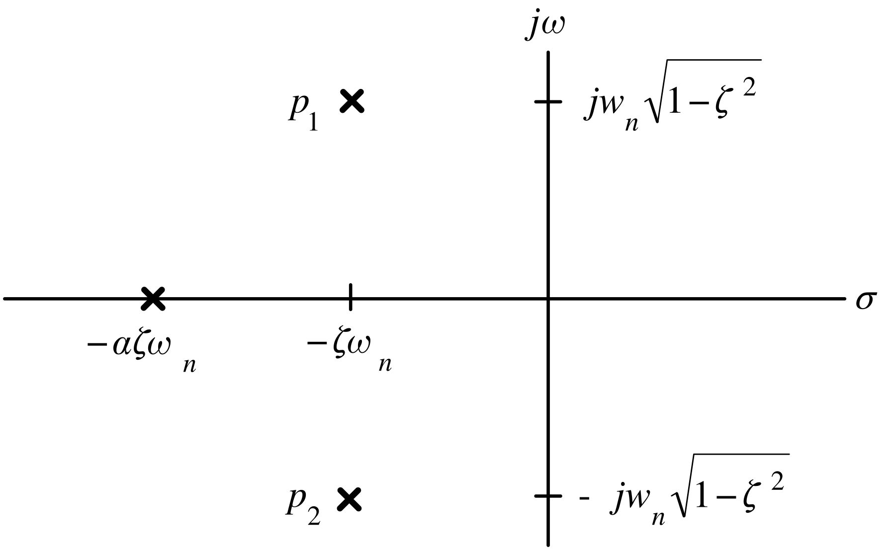
\(C(s)=G(s)\dfrac{1}{s}=\dfrac{\alpha\zeta\omega_{n}}{s+\alpha\zeta \omega_{n}}\dfrac{\omega_{n}^{2}}{s^{2}+2\zeta\omega_{n}s+\omega_{n}^{2}}\dfrac{1}{s}.\)
\(\zeta>0,\omega_{n}>0,\alpha>0\) so \(sC(s)=\dfrac{\alpha\zeta\omega_{n}}{s+\alpha\zeta\omega_{n}}\dfrac{\omega_{n}^{2}}{s^{2}+2\zeta\omega _{n}s+\omega_{n}^{2}}\) is stable.
By the FVT \(c(\infty)=\lim_{t\rightarrow\infty}c(t)=\lim_{s\rightarrow 0}sC(s)=1.\)
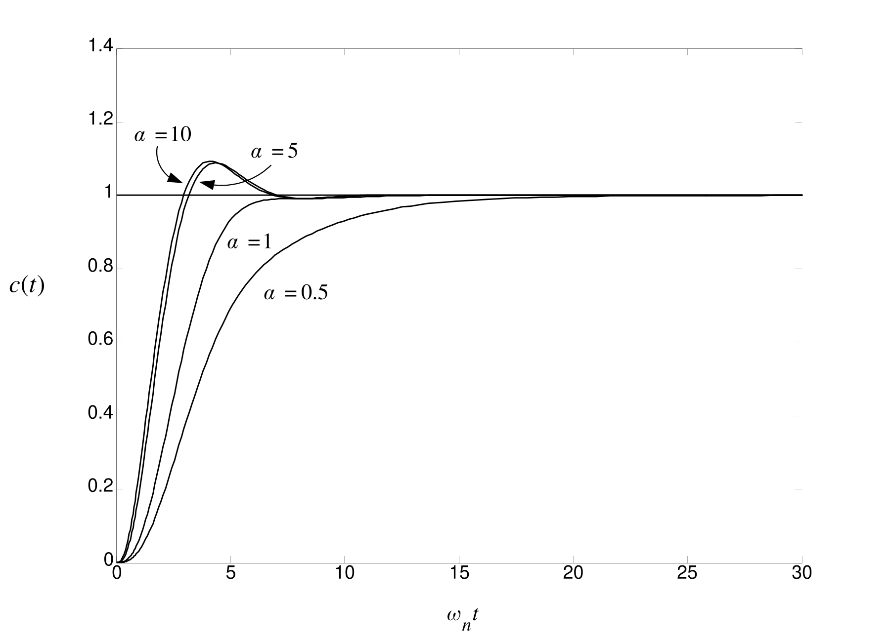
\[ C(s)=\frac{\alpha\zeta\omega_{n}}{s+\alpha\zeta\omega_{n}}\frac{\omega_{n}^{2}}{s^{2}+2\zeta\omega_{n}s+\omega_{n}^{2}}\frac{1}{s}=\frac{1}{s/\alpha\zeta\omega_{n}+1}\frac{\omega_{n}^{2}}{s^{2}+2\zeta\omega _{n}s+\omega_{n}^{2}}\frac{1}{s} \]
As \(\alpha\rightarrow\infty,\) \(C(s)\) reduces to a \(2^{nd}\) order system without a zero.
As \(\alpha\) decreases, the pole at \(-\alpha\zeta\omega_{n}\) moves closer to the \(j\omega\) axis.
\(\Longrightarrow\) The response is more sluggish as the transient dies out slower.

← Course Home · System Modeling and Control · Chapter 8